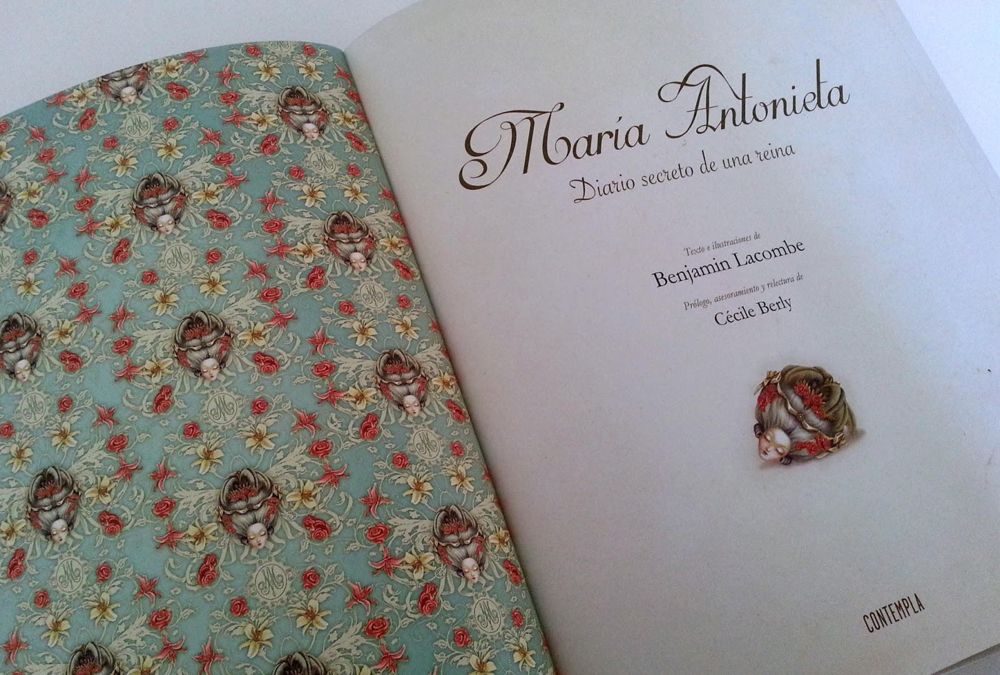

Recomendaciones
Aqui algunas recomendaciones de libros que hablan de Maria Antonieta.
- María Antonieta. Un clásico que explora su vida desde su llegada a Francia hasta su
trágico final, con un enfoque psicológico y detallado
- María Antonieta: Diario secreto de una reina. Un libro ilustrado que combina
historia y arte para contar la vida de la reina de una manera visualmente impactante